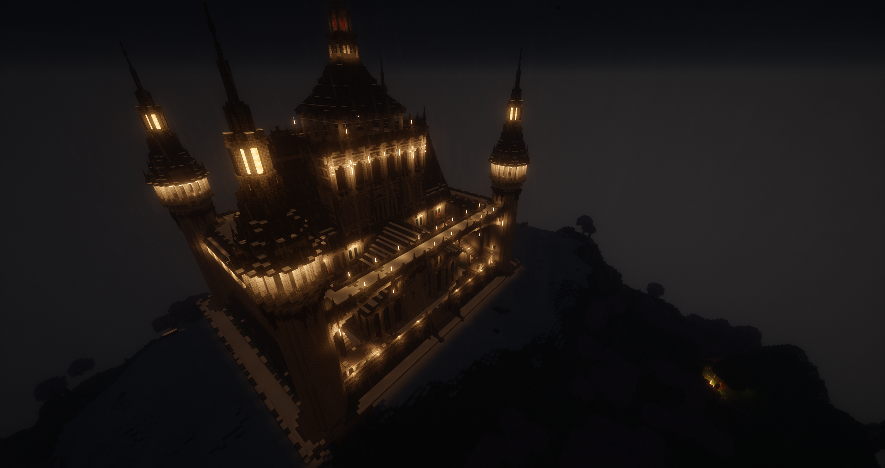
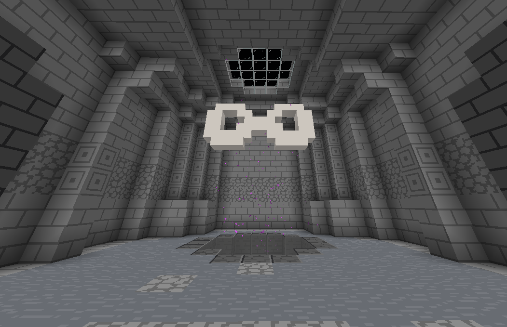
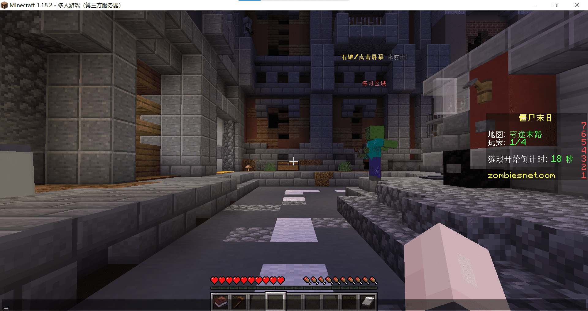

| - 游戏介绍 - |
| - 原版生存 - |

| - 如果你不想费劲头脑研究粘液, 可以来玩一玩原版生存, 体验原版的风味, 你可以选择享受无尽的友情, 也可以化身独狼在mc原版大世界中探索,
你可以和你的伙伴们一起挑战凋零、坚守者,
也可以只身一人拯救村庄、解放末地 - |
| - 粘液科技 - |

| - 粘液科技作为一款老牌插件, 早在 [null] 就发布了第一个版本, 附带很多新颖强大的物品, 提供许多欢乐, 同时还可以添加很多附属插件,
部分附属插件附带的物品甚至比op还强大 - |
( 注: 如果你的肝就此陨落, 我们不会向您提供任何医疗费用 )
| - Minigame - |

| - 研究粘液科技研究的头大, 那你可以尝试一下 Minigame , 其附带多种玩法, 大多为多人游戏, 你可以和朋友们一起在这里狂欢, PVE
Zombieday / 职业战争 / 起床战争
/ 站桥 / 心跳水立方 / 迷失杀手等多种玩法供你挑战 - |
| - 无尽地域 - |

| - 无尽地域是一个PVE游戏, 建议4-8人一同游玩, 只要你们的技术够高, 就可以一直走下去, 但是一旦失误, 整个团队全部陨落,
那一切也只能从头再来, 在这里你需要时刻注意自己的血量,
这里并不会回血, 你唯一能做的就是祈祷下一个箱子里能有几个血瓶, 如果你的血条清空,你只能祈祷拿着 [复生之星] 的队友能尽快找到信标, 如果已经无路可去, 面前传送门的背后,
究竟是无尽的资源与财富, 还是恐怖的噩梦, 都不为人知 ( 你可能会因此血压飙升, 我们依旧不会向您提供医疗费 ) ( 您可以在复活队友前大喊 "复活吧! 我的**" 来恶搞您的好友 ) - |
| - 僵尸末日 - |

| - 僵尸末日也是一个较老的玩法, 在不同的场地中躲避僵尸的攻击并反击, 通过攻击僵尸赚取酬金, 解锁更多的场景与更多的武器、效果, 你能撑到第几波 - |
 [粘液-高玩] rushi2012
[粘液-高玩] rushi2012
 [吉祥物] 村庄
[吉祥物] 村庄